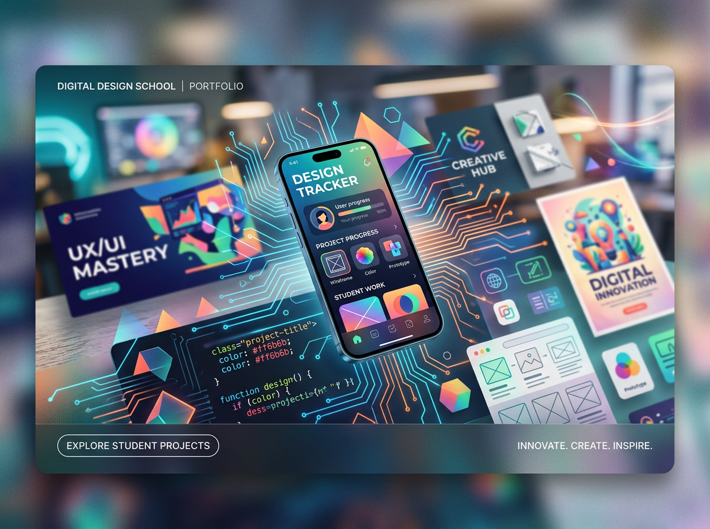

Bakery Website
Website design and development for a local bakery, focused on clarity, structure, and a more polished digital presence.
View case studySelected Work
A mix of work, school, and personal projects focused on web design, digital experiences, and emerging technology.
Professional
Real-world projects where design decisions meet practical needs.
Website design and development for a local bakery, focused on clarity, structure, and a more polished digital presence.
View case studyAcademic
Prototypes, UX work, and design explorations developed through my studies.
A concept-driven prototype exploring interaction, engagement, and playful digital experiences.
View projectExperimental
Independent experiments where I explore web design, interfaces, and emerging technologies.

A personal exploration combining design curiosity, technical experimentation, and future-facing ideas.
View experiment